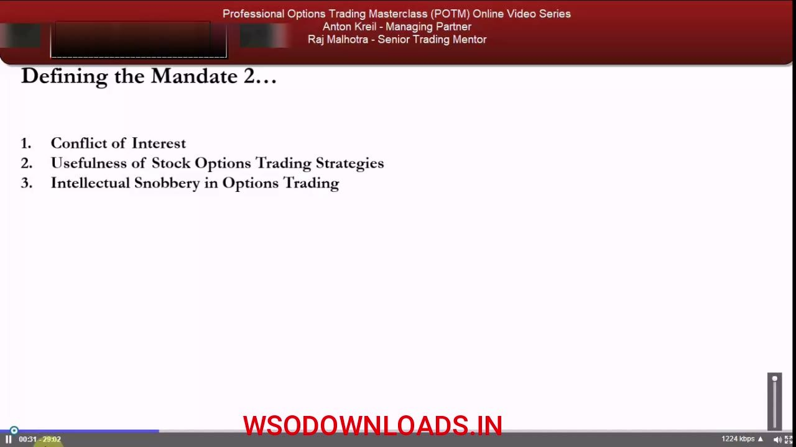
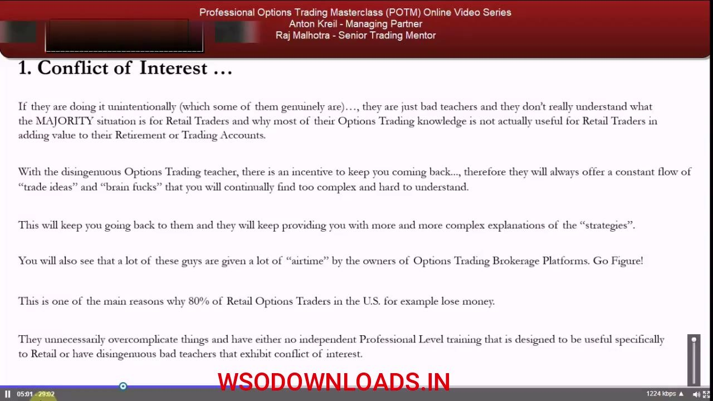
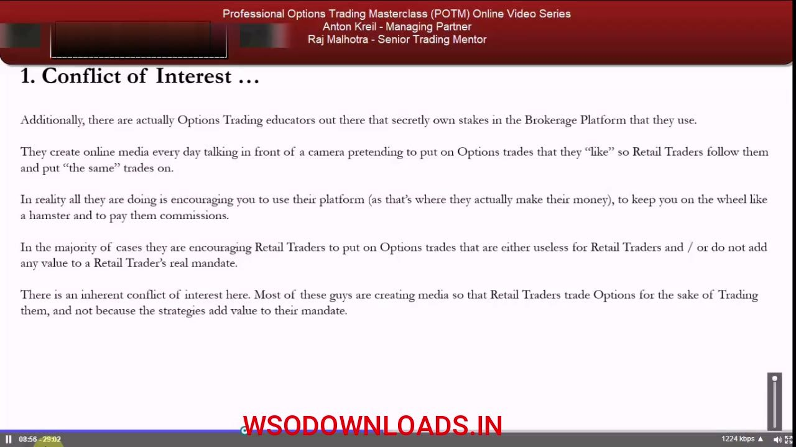
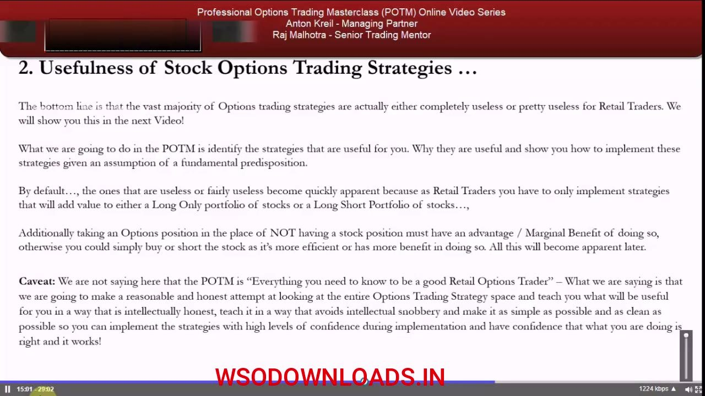
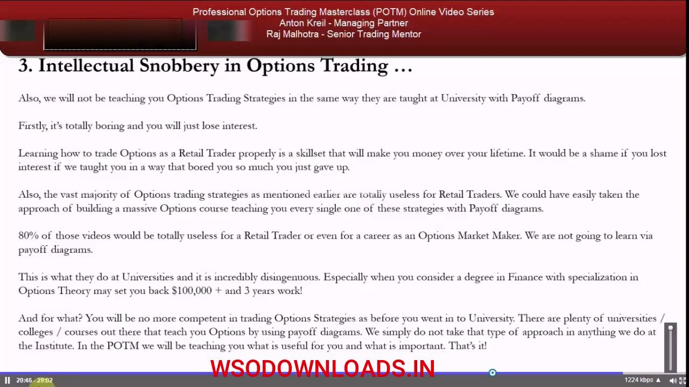
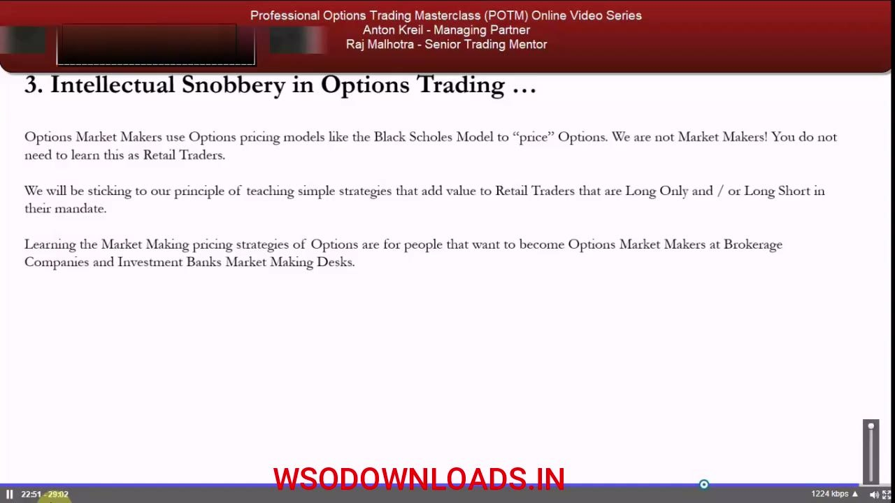

Defining the Mandate (Part 2)
Why most options education works against the retail trader, and the three filters that keep POTM aligned with your real mandate.
Most options educators teach through a market-maker lens that over-complicates on purpose to keep you paying. This chapter arms you against that conflict of interest, defines what is actually useful, and strips out the intellectual snobbery so you learn only what adds value to a long-only or long-short book.
The gist
- Most options educators, especially in the US, are ex or current market makers / floor traders, and they teach through a market-maker lens that does not fit the retail mandate.
- They over-complicate ('brain fucks') either intentionally (to sell subscriptions) or unintentionally (bad teachers), keeping retail 'on the wheel' via 'hot options trades of the week' and paid chat rooms.
- Brokers give these guys airtime because brokers are incentivized by commission; some educators secretly own stakes in the platform they push and post daily media 'liking' trades to drive platform usage.
- '90% of it is nonsense' — and 80% of retail options traders in the US lose money, largely from boredom trading and over-trading.
- The retail mandate is identical to the professional's: make as much money as possible with as little risk as possible, and NOT over-trade — over-trading is 'a big sin'.
- The marginal-benefit test: an options position taken in place of a stock position must have a marginal advantage over just buying or shorting the stock — otherwise, trade the stock.
- Opportunity cost of time: retail is part-time, so don't spend hours to make a few hundred bucks when you could work your job or business instead.
- No payoff diagrams and no Black-Scholes / market-making pricing models — a finance degree specializing in options theory costs $100,000+ and 3 years, and is 'completely irrelevant' to the retail trader.
Three Areas in This Video
- 1. Conflict of Interest in the retail options market.
- 2. Usefulness of Stock Options Trading Strategies.
- 3. Intellectual Snobbery in Options Trading, and why to avoid it at all costs.
This is Part 2 of defining the retail trader mandate. The whole video is about learning to read between the lines of who is teaching you and why, so you only absorb what serves your mandate.

The Market-Maker Lens Problem
- Most options educators, especially in the US, are ex or current options market makers / floor traders.
- They know a great deal about options — but by definition they teach through a market-maker lens.
- Retail traders are in a very different position: their vehicle is adding value to a long-only pension or a long-short trading account.
A market maker's knowledge is real, but it is built for a different job. Applying it wholesale to retail means most of the detail 'doesn't apply' to the position you are actually in.

Brain Fucks: Intentional vs Unintentional
- They massively over-complicate — throwing 'brain fucks' at retail traders.
- Intentional: disingenuous — extra non-useful layers so they look like experts and you keep coming back.
- Unintentional: they are simply bad teachers who don't understand the retail mandate.
- Either way, you as the retail trader get no benefit.
Over-complication is designed to distract you from what matters to your mandate. Whether it is deliberate or just incompetence, the outcome for you is the same: wasted effort on knowledge you cannot use.
Keeping You 'On the Wheel'
- The overcomplication keeps you coming back for clarification — i.e. paying subscription models.
- Tactics: 'hot options trades of the week' published daily or weekly, plus options-trader chat rooms pushing overcomplicated ideas.
- You keep visiting the chat room every day and paying the subscription because it feels too complex to understand alone.
The business model needs you dependent. Manufactured complexity is the mechanism that keeps you subscribing, not a service to your trading.

The Broker Commission Loop
- Brokerage platform owners give these guys a lot of airtime because brokers are incentivized by commission.
- This is one of the main reasons 80% of retail options traders in the US lose money — their accounts are negative.
- The cause is boredom trading: no systematic process, and no reason to hold an options position over simply being long or short the stock.
Media presence keeps you trading, and trading generates commission. The 80% loss statistic is called 'completely accurate' and is tied directly to over-trading with no system.
Secret Platform Stakes
- Some educators secretly own stakes in the brokerage platform they use.
- They post daily media pretending to put on trades they 'like' (note the quotation marks) just to stay relevant and say something.
- Retail followers copy the trades; in reality it just drives platform usage and commissions.
- '90% of it is nonsense' and completely useless for the retail mandate.
When the educator profits from the platform you use, every 'trade idea' is really a prompt to trade on their venue. For legal reasons they cannot be named, but they 'do 100% exist in abundance' — you learn to spot them through experience.
Your Mandate Equals the Professional's
- The retail mandate is exactly the same as a hedge fund manager or an investment-bank prop trader: make as much money as possible with as little risk as possible.
- It is NOT to constantly trade to make a little bit here and there — over-trading is 'a big sin' in all trading.
- The only difference: the retail trader is managing their own pot of money, not investor or shareholder capital.
Aligning yourself with the professional remit reframes success as return-per-risk, not activity. That single shift immunizes you against most of the boredom-trading trap.
Usefulness: The Marginal-Benefit Test
- The vast majority of options trading strategies are completely useless or pretty useless for retail traders.
- POTM keeps only strategies that add value to a long-only OR long-short stock portfolio — nothing else.
- Marginal-benefit test: taking an options position instead of a stock position must have a marginal advantage over just buying or shorting the stock; otherwise, trade the stock.
- Opportunity cost of time: retail is part-time — don't spend hours to make a few hundred bucks when you could work your job or business.
Two filters decide whether an options trade is worth it: does it beat the equivalent stock trade, and is it worth your limited time? If either fails, skip it.

The Honesty Caveat
- POTM is not 'everything you need to know' to be a good retail options trader.
- It is a reasonable, honest attempt to survey the entire options strategy space and keep what is useful.
- Taught intellectually honestly, as simply and cleanly as possible.
- Goal: implement strategies with very high confidence during the real-money phase, knowing what you do 'is absolutely right and it works'.
The promise is not completeness for its own sake but usefulness and confidence — a curated, honest survey rather than a monstrous catalogue of unusable strategies.
Intellectual Snobbery: No Payoff Diagrams
- No teaching via payoff diagrams the way universities do — it is boring and you will lose interest.
- Building a massive course covering every strategy with payoff diagrams would leave 80% (80-90%) of the videos totally useless.
- A finance degree specializing in options theory may set you back $100,000+ and 3 years — and leave you no more competent than before.
Payoff-diagram teaching is called disingenuous because most of it is unusable. POTM teaches only what is useful and important — 'That's it!'

No Black-Scholes, and the Selection Distinction
- Market makers use pricing models like Black-Scholes to price options; this is 'completely irrelevant' for retail and you do not need to learn it.
- Negative selection portfolio (market makers): positions you did NOT want, forced onto you as a price maker, then hedged with complex strategies.
- Positive selection portfolio (retail speculators): positions you DO want; you are a price taker who accepts the market maker's price and never needs that complexity.
- Three takeaways: understand the conflict of interest; know what's useful; get rid of the intellectual snobbery.
Market makers price and are price makers stuck with unwanted inventory to hedge; retail speculators take price and hold only positions they want. Because you never carry a negative selection portfolio, you never need the market maker's complex machinery.

Glossary
- Conflict of InterestThe misalignment where options educators (often ex or current market makers) and the brokers who platform them profit from your subscriptions and commissions, incentivizing them to over-complicate and keep you over-trading.
- Retail Trader MandateIdentical to a professional's: make as much money as possible with as little risk as possible, while managing your own money and avoiding over-trading.
- On the WheelThe dependency loop where manufactured complexity keeps a retail trader returning for clarification, paying subscriptions and generating commissions like a hamster on a wheel.
- Brain FuckAnton's term for deliberately or carelessly over-complicated options information layered on top of what retail actually needs, done to look expert or to sell subscriptions.
- Marginal-Benefit TestAn options position taken in place of a stock position must have a marginal advantage over simply buying or shorting the stock; if not, trade the stock instead.
- Opportunity Cost of TimeBecause retail traders are part-time, time spent on complicated strategies for small gains is lost time that could be spent earning at a job or business.
- Intellectual SnobberyTeaching options via payoff diagrams and market-making pricing models (e.g. Black-Scholes) to appear superior; irrelevant to the retail mandate and avoided in POTM.
- Payoff DiagramThe university-style graphical teaching method for options strategies that POTM rejects as boring and, for the vast majority of strategies, useless to retail traders.
- Black-Scholes ModelAn options pricing model used by market makers; described as completely irrelevant to the retail trader who is a price taker, not a price maker.
- Negative Selection PortfolioA portfolio of positions a market maker did not want, acquired as a price maker and then hedged with complex strategies — the situation retail speculators never face.
- Positive Selection PortfolioA portfolio of positions the trader actually wants; the retail speculator is a price taker who accepts market-maker prices and holds only chosen positions.
- Price Maker vs Price TakerMarket makers make (quote) the price and get stuck with unwanted inventory; speculators (retail) take the quoted price and hold only positions they want.